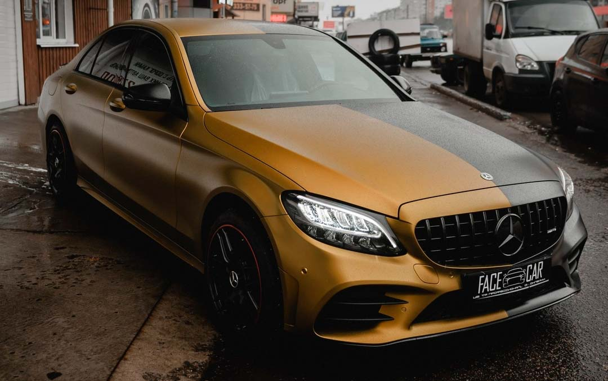
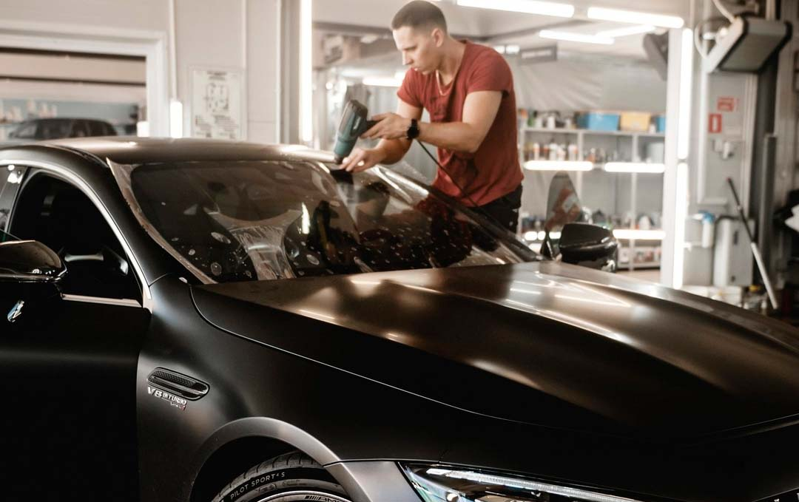
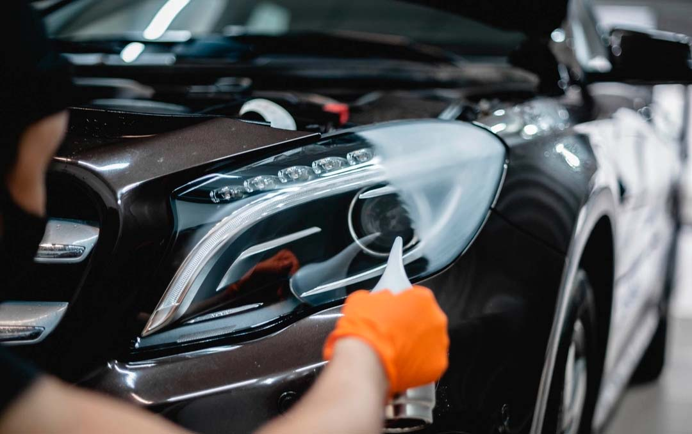

Винилмат и цвет на кузове
Мы не можем убрать камни с дорог, но можем защитить от них ваш автомобиль.
01
Антигравийная полиуретановая плёнка принимает удар вместо краски: щебень с трассы, песок или царапину на парковке. Подберём плёнку под любые предпочтения: прозрачный глянец, матовая или сатиновая фактура. Надоел нынешний цвет авто? Предоставим на выбор сотни вариантов цветов и оттенков цветного полиуретана, защита и стайлинг в одном лице. Также защитим интерьер авто, глянцевые, матовые элементы, экраны от мелких царапин и повреждений.
02
Салон разбираем и чистим по материалам, а не одним средством на всё. Ткань сидений и пола промываем так, чтобы грязная вода уходила, а не оставалась в ворсе. Кожу очищаем и напитываем, иначе после сушки она дубеет. Пластик, потолок, карты дверей и багажник — отдельно. Запах убираем вместе с источником, освежителем его не перекрываем. Пятно смотрим до работы: свежее уходит, старое въевшееся может оставить след, и это видно сразу.
03
Паутина, круги от щёток и мелкие риски сидят в лаке. Полировка снимает этот верхний слой и выравнивает поверхность: цвет снова читается глубоко, кузов блестит ровно, без мути. Перед работой смотрим лак на свет и решаем, где хватит лёгкого прохода, а где заходить глубже уже нельзя — лак не бесконечный. Скол до грунта или металла так не закрыть. Это окраска детали, полировкой её не заменяем.
04
Керамика — твёрдый слой поверх уже ровного лака. Царапины она не прячет: мутный кузов сначала моют и полируют, и только потом наносят состав, иначе дефекты просто законсервируются. После этого вода собирается в крупные капли и скатывается, реагенты и грязь меньше прикипают, машину проще мыть. Сколько покрытие проживёт, зависит от состава и от моек. Срок называем до записи, когда видим кузов.
05
Плёнка на стёклах режет солнце, нагрев салона и взгляд с улицы. Лобовое и передние двери оставляем в рамках допустимого светопропускания, чтобы плёнка не стала поводом для претензий на дороге. Задние двери и заднее стекло можно сделать темнее — здесь ограничения нет. Если салон затемнять не нужно, а летом в машине жарко, ставим атермальную плёнку: она почти прозрачная и держит тепло снаружи.
06
Штатной шумки на скорости часто не хватает: слышно колёса, арки и дрожь дверей. Добавляем виброизоляцию и шумопоглощение на металл — в двери, пол, арки, крышу и багажник. Можно закрыть всё сразу, можно только то, что шумит, обычно это двери и арки. Обшивку снимаем, после оклейки собираем обратно: клипсы, кнопки и динамики должны встать на свои места.
07
Вмятину выправляем без шпаклёвки и без перекраса, поэтому краска остаётся заводской. Так уходят град, след от соседней двери и неглубокая парковочная вмятина. Металл поднимаем изнутри инструментом или снаружи клеевой вытяжкой — слой лака при этом не наращивают. Работает, пока краска не лопнула и металл не вытянут в острый залом. Это видно на осмотре, до того как машина остаётся в боксе.
Тяните вбок — так же, как плёнку по кузову.

Винилмат и цвет на кузове

Лобовоеплёнка вместо скола

Фарысвет возвращаем, потом закрываем
Студия
+7 920 220-20-00Назовите модель и что нужно — скажем срок и сумму. Имя и анкету заранее не собираем.